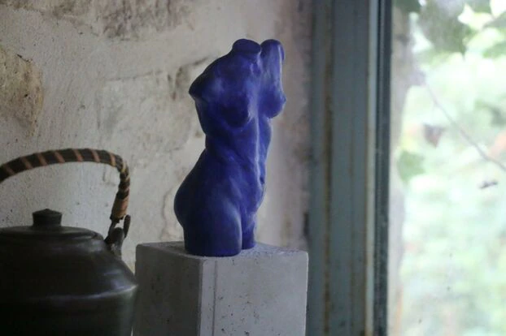

Une Mère, une fille et un café céramique !
Valérie Colombel s’est lancée dans l’art de la poterie, il y a une vingtaine d’années. « Avant, je travaillais comme assistante de direction. Mais j’ai bien vu que je n’étais pas du tout adaptée. » Au début des années 2000, elle reprend des cours à l’école des Beaux-Arts de Beauvais. « J’avais eu mes trois enfants, ma dernière fille rentrait en maternelle, c’était le moment », glisse-t-elle.
20 ans plus tard, Manon Lemaire, se lance avec sa mère dans ce projet passionant
L'art de recevoir combiné à l'artisanat, au coeur du vingitème arrondissement de Paris
« Même si la cuisson peut différer, ce qui est fascinant, c’est qu’on a les mêmes gestes que ce soit en Afrique, en Asie ou en Europe. Nos outils, ce sont nos mains »
« Regardez, on peut voir des traces de doigts ». Sur la pièce, de fines imperfections. « La poterie industrielle est froide, sans vie. Alors que pour les poteries artisanales, même les plus parfaites, on retrouvera toujours l’empreinte du potier, c’est ce qui donne vie aux pièces. »
« La sortie d’un four, c’est toujours une surprise. Au milieu de catastrophes, une pièce peut devenir magnifique. » Ou l’inverse…